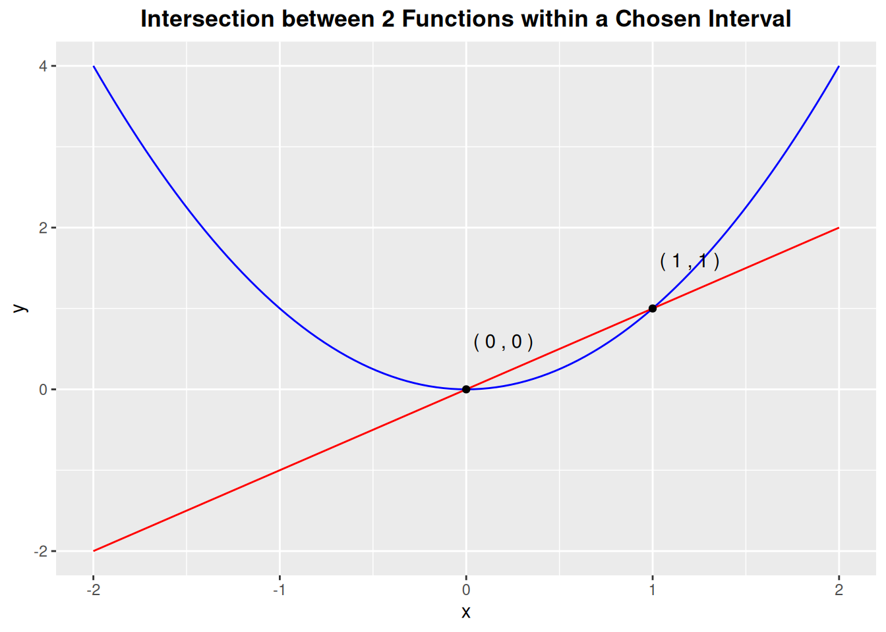
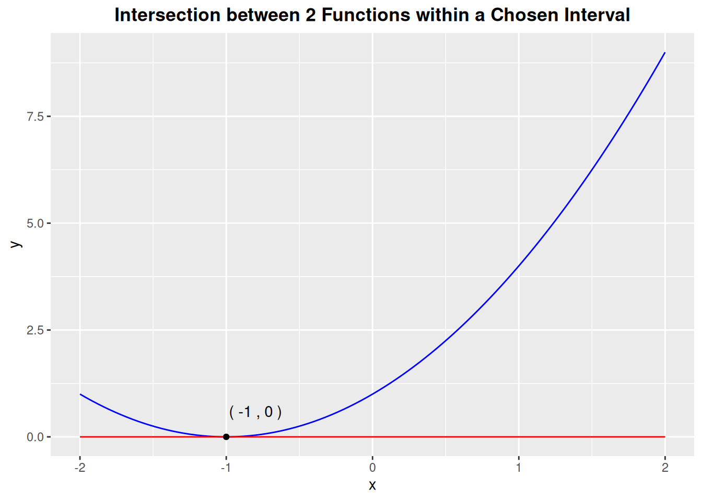

# install.packages("remotes")
# install.packages("devtools")
devtools::install_github("ADC-405-S26/mathR")Introduction to mathR
Overview
The mathR provides convenient functions for some basic algebraic tasks.
The root_finding() function is motivated by the quadratic formula in determining the roots of reducible degree 2 polynomials with one variable. It should demonstrates the neatness and power of the quadratic formula because when we get to degree 3 polynomials, finding roots is no longer a simple task.
The second function, line_line_intersection() could be said to come out of the first function. As one thinks of the roots of a function, one can extend that idea to multiple functions. The intersections between them, if exist, are the roots of the difference function (f1(x)-f2(x)). The package incorporates the ggplot2 package which helps create a visualization of polynomial functions with the rootSolve package that can handle root finding for degree 3 polynomials to return a plot of the intersections between two polynomials inside the user’s interested x-interval. Because line-line intersection is highly used in Economics, users in this field could find this function helpful.
Lastly, the modular_arithmetic_for_function() function is motivated by the subject of rings and fields. A core concept users will encounter in this subject is the abstract idea of categorical objects: to understand an object, you do not have to look inside it but rather study its relationship with objects that are already well-understood. Thus, modular arithmetic provides the tool to travel from a bigger ring to a smaller one, one which we can understand. On the subject of polynomials, this function seems fit within the scope of this package.
Installation
To install this package from GitHub, use
Load the package
library(mathR)Example Dataset and Work Flow
The package contains a dataset and three functions
example_data
We will use this dataset to demonstrate the use of each function in the package.
print.data.frame(example_data)
#> subject_id param_graph modular rand_func maxdeg2_func
#> 1 1 0 1 1, 2, 3, 4 1, 2, 1
#> 2 2 1 2 0, 2, 9,.... 0, 2, 9
#> 3 3 0 3 1, 0, -9, -3 1, 0, -9
#> 4 4 0 4 1, -6, 5 1, -6, 5
#> 5 5 0 5 25, 100,.... 25, 100, 1
#> 6 6 0 6 1, -1, -1, 2 1, -1, -1
#> 7 7 1 7 2, 0, -5 2, 0, -5
#> 8 8 0 8 0, 1, 0,.... 0, 1, 0
#> 9 9 2 9 5, 2, 0.2 5, 2, 0.2root_finding
This function returns the roots of a polynomial of one variable x whose maximum degree is 2 and coefficients are in the Real domain.
# process inputs from the example_data table
vector_param <- example_data$maxdeg2_func[[1]]
vector_param
#> [1] 1 2 1
a <- vector_param[1] # first coefficient
b <- vector_param[2] # second coefficient
c <- vector_param[3] # third coefficient
root_finding(a,b,c)
#> [1] -1line_line_intersection
This function takes two polynomials of one variable x whose maximum degree is 3 and coefficients are in the Real domain. It returns a graph of the functions and the coordinates of their intersections within the user’s specified x-interval.
# process inputs from the example_data table
param <- example_data$param_graph
func1 <- paste0(param[1],"x^3 + ",param[2],"x^2 + ",param[3],"x + ",param[4])
func1 # first function
#> [1] "0x^3 + 1x^2 + 0x + 0"
func2 <- paste0(param[5],"x^3 + ",param[6],"x^2 + ",param[7],"x + ",param[8])
func2 # second function
#> [1] "0x^3 + 0x^2 + 1x + 0"
interval <- param[9]
paste0('(',-interval,',', interval,')') # graphing window
#> [1] "(-2,2)"
line_line_intersection(param[1],param[2],param[3],param[4],param[5],param[6],param[7],param[8],param[9])
If you just want to visualize a degree 2 polynomial and its root from the first example (f(x)= x^2 + 2x + 1 and x=-1 is the root) here, you can make the parameters for the second function all zero and start with a wide interval. If the roots appear close to the origin, you then zoom into the origin by reducing the size of your interval.
line_line_intersection(a1=0,a2=1,a3=2,a4=1,
b1=0,b2=0,b3=0,b4=0,
interval =2)
modular_arithmetic_for_function
This function applies modular arithmetic to polynomials whose coefficients are in the Real domain.
# process inputs from the example_data table
func_coeff <- example_data$rand_func[[1]]
func_coeff
#> [1] 1 2 3 4
m <- example_data$modular[2]
m
#> [1] 2
modular_arithmetic_for_function(func_coeff,m)
#> [1] "1*x^3 + 0*x^2 + 1*x^1 + 0*x^0"